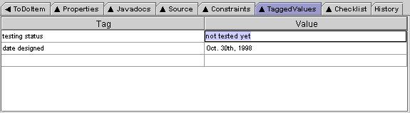

ArgoUML's TaggedValues Tab allows you to enter and view TaggedValues on the selected design element. TaggedValues are key-value pairs that are stored with the design element, but are (usually) not interpreted by the system. For example, if you wanted to add an indication as to the testing status of each class in your design, you might add a TaggedValue with key "testing status" and a value that is one of "untested", "being tested", or "passed testing".
Back to ArgoUML Tours
Back to ArgoUML Home